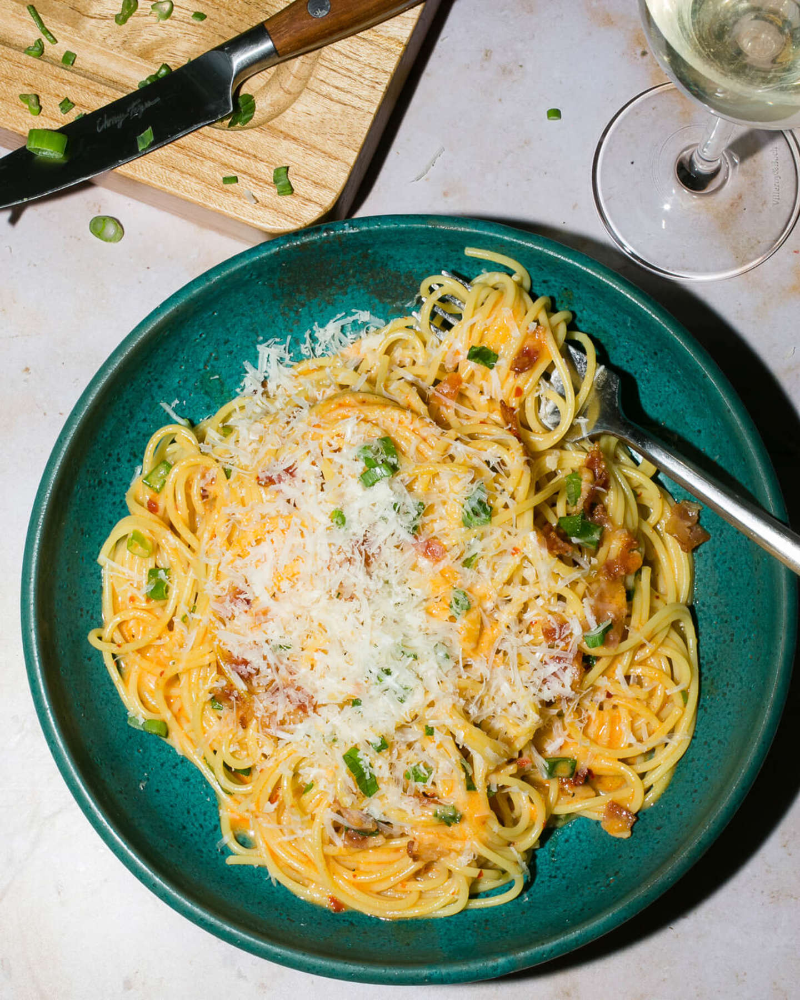

Miso Carbonara

A Spicy Twist on an Italian Classic
If you couldn't tell from my Bacon Pad Thai recipe, we like to mix and match our food at the Teigen/Legend household. So, here we go again – introducing my Spicy Miso Pasta, a new carb-y dish with an Asian twist. It still has the creaminess of the Parmesan and the saltiness of the bacon, but the miso gives it that umami element and, of course, I had to add some chili garlic sauce to kick up the spice. Chop up some scallions for color and you're done! Make sure to have some bread nearby so you can soak up all the leftover sauce. That's gonna be the best part!
Ingredients
- 2 tablespoons olive oil
- 4 ounces thick-cut or regular bacon, diced (about 1 cup)
- 3 tablespoons chili garlic sauce (or sambal oelek and ½ teaspoon chili flakes), plus more to taste
- 2 tablespoons blond or light miso, plus more to taste
- 2 tablespoons hot water
- 3 eggs
- ¾ pound dry spaghetti (or linguine or fettuccine)
- ounces finely grated Parmigiano Reggiano cheese (about 1 ¼ cups), plus more for garnish
- 1 teaspoon freshly ground black pepper
- ½ cup sliced scallion greens, plus more for garnish
Steps
- Bring a large pot of generously salted water to a low boil, cover, and keep hot on a low burner. Heat the oil over medium heat in a large skillet, then add the bacon and cook until crisped and the fat is rendered, 9 to 10 minutes. Remove from the heat and reserve.
- n a bowl, whisk together the chili garlic sauce, miso, and hot water from boiling pot until smooth, then beat in the eggs. Cook the pasta according to box instructions until al dente and drain, reserving ½ cup of the pasta cooking water.
- Add the pasta to the skillet with the bacon and toss to combine. Heat over medium heat until everything is nice and hot. Add the egg mixture, reduce the heat to low, and quickly toss until the eggs coat the pasta but aren’t scrambled. Add the cheese, pepper, and pasta water as desired until the sauce reaches your desired flavor and consistency. Taste, and add more chili garlic sauce if you like things spicy. Toss in the scallions. Divide among bowls, and garnish with more scallions and Parm.